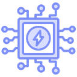

J.A.R.V.I.S. — высокотехнологичный голосовой ассистент для macOS и Windows, который понимает команды и помогает с повседневными задачами. Он открывает приложения, ставит напоминания, ищет информацию, читает текст с экрана и отвечает живым голосом.
Главным источником вдохновения стала вселенная Marvel и искусственный интеллект Тони Старка. Разработчики поставили амбициозную цель: перенести фантастический образ в реальный мир на базе современных компьютеров.
Автоматизация процессов, облегчение рутинных задач и повышение эффективности работы за компьютером. Проект подходит для фанатов Железного человека, людей, работающих за Mac и Windows, а также для параноиков приватности (благодаря Offline Vosk) и разработчиков.
Никаких подписок. Только наш код.
Распознавание русской речи онлайн и офлайн, а также 150+ команд: запуск приложений, планы на день, поиск.
Ответы генерируются встроенным движком и TTS Fish Audio для живых интонаций.
Гибридный интеллект: подключены 2 облачных провайдера — AI.AI.BY и OpenRouter.
Компьютерное зрение (OCR) мгновенно считывает текст с экрана через системные алгоритмы (работает нестабильно).
Умный трекинг активности: логи в SQLite, анализ утомляемости каждые 5 минут и предложение перерыва.
Конфиденциальные ключи и пароли надежно шифруются в Apple Keychain и защищенном хранилище Windows.
Уровни, опыт и достижения за реальную активность. Работа как игра.
Приложения, окна, звук, яркость, скриншоты, таймеры и умный поиск в Google и YouTube — голосом.
Погода, курсы, новости, крипта, Википедия и многое другое — по команде.

Модули 07Быстрая разработка и мощная экосистема библиотек для ИИ и компьютерного зрения.
Единый цифровой холст снижает нагрузку на CPU практически до нуля.
Гибридный подход: Vosk для приватности, AI.AI.BY и OpenRouter для сложных задач.
Быстрые запросы к логам и надежное шифрование паролей в системе.
Четыре инженерных барьера, которые пришлось обойти, чтобы ассистент работал как часть системы.
Микрофон программно блокируется в момент, когда ассистент произносит голосовой ответ. J.A.R.V.I.S. не слышит сам себя.
MIC OFFСистема распознавания речи имеет лимиты. Перезапуск сессии происходит незаметно для разговора.
VOSK RESTARTЕсли окно уходит на задний план, частота обновления экрана падает с 30 до 6 FPS, экономя заряд батареи.
Performance GovernorИнтерфейс отрисовывается на едином цифровом холсте вместо тяжелых слоев, что снижает нагрузку на CPU до нуля.
Canvas HUDЧетыре направления, которые сделают J.A.R.V.I.S. умнее, безопаснее и ближе к человеку.
Улучшение системы хранения и шифрования конфиденциальных данных.
Создание прозрачного монитора активности вместо фейковых антивирусов.
Ассистент сам напоминает о делах. Внедрение RAG по личным файлам и Home Assistant.
Агентные цепочки с повреждением. Связка: Mac + умная колонка + смартфон.
SAIFER STUDIO: от первой строки кода в одиночку — до стабильной версии 7.0 и этого сайта.
Главный разработчик в одиночку писал ядро системы, закладывал архитектуру, тестировал базовые алгоритмы распознавания речи и интеграции ИИ.
Для выхода на новый уровень была сформирована команда из 4 человек (SAIFER STUDIO). Глубокий рефакторинг, новый HUD, безопасность и сайт.
25 файлов, 6000+ строк кода на Python. Впереди защита проекта и новые команды.
Главный инженер
Вдохновитель и архитектор проекта. Человек с большой идеей, четким видением продукта. Отвечает за общую логику, написание основного кода и интеграцию всех модулей ИИ.
QA-инженер и Lead Designer
Ответственный за визуальный стиль приложения и его стабильность. Разрабатывал кинематографичный интерфейс и искал скрытые баги, проверяя систему на экстремальные нагрузки.
Full-Stack Hardware Engineer
Разрабатывает внешние устройства с нуля до окончательного варианта: пишет код для микроконтроллера, паяет узлы схемы, моделирует и печатает корпус изделия, а также собирает готовое решение.
Разработчик сайтов
Отвечает за сайт: структуру, дизайн и тексты. Делает так, чтобы у проекта была нормальная страница, а не просто набор абзацев.